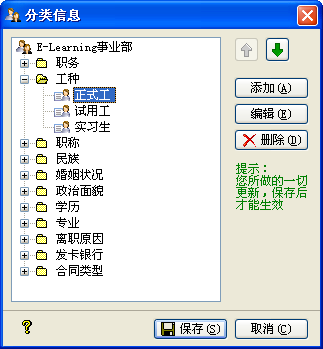

| 基本数据 - 分类信息 |
|
您可以从[系统(S)]->[基本数据]->[分类信息]打开
分类信息设置窗口，也可以点击工具栏中的[分类信息]来打开，其界面如下图所示：  您可以在这里定义您公司 员工档案所需要的一些基础数据，它支持职务、工种、职称、民族、婚姻状况、政治面貌、学历、专业、离职原因、发卡银行等信息的自定义操作，其中[离职原因]用在在职员工的离职设置中，其它信息用在员工档案中。 您可以对每个分类添加其子项信息，也可以对已有的信息进行编辑、删除及排序操作。 提示：您可以三击(快速点击鼠标左键三次)以实现对可编辑节点的编辑操作。 需要注意的是，您对分类信息所做的所有改动，也[部门设置一样]，只有在点击[保存]按钮时才能生效。 当您已对分类信息做过改动，且点击[保存]之后，主界面的分类信息结构会同步刷新；而对部门做过删除操作后，员工档案信息中的对应的分类信息会同步删除。 |